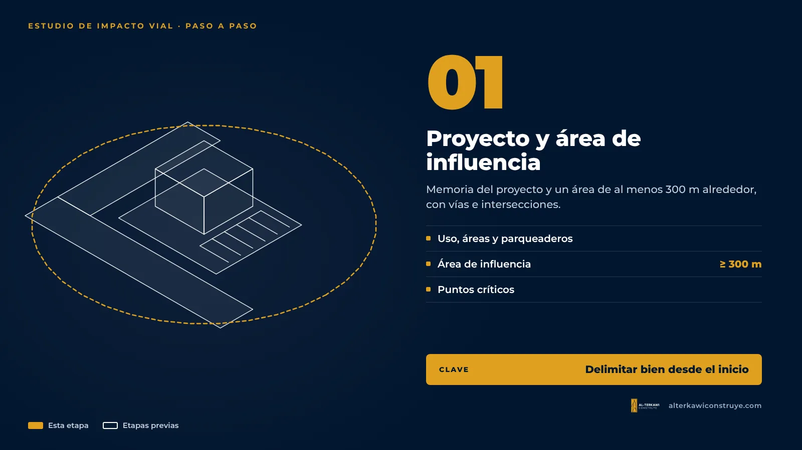
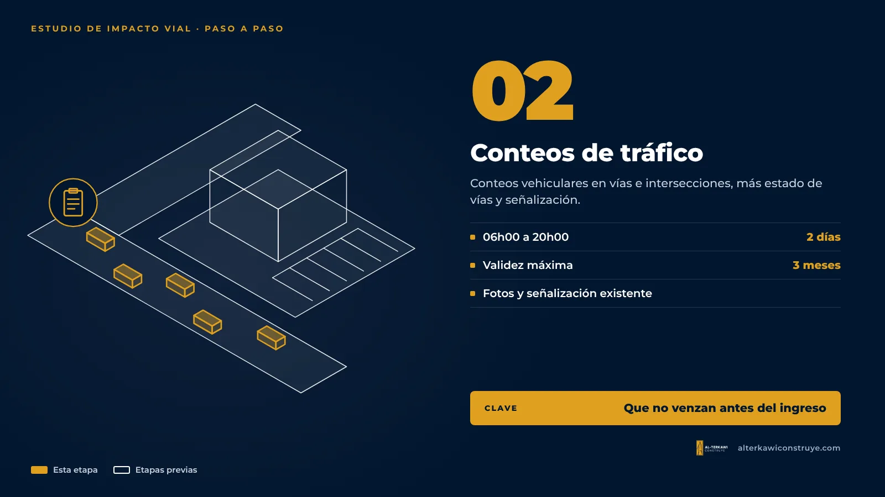
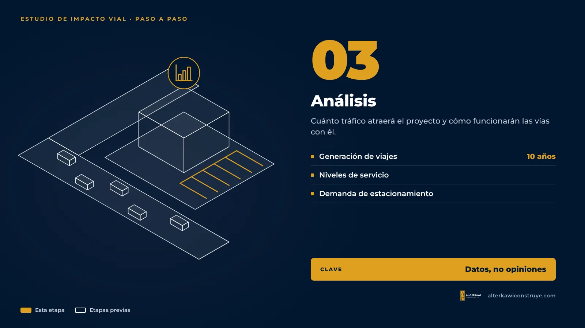
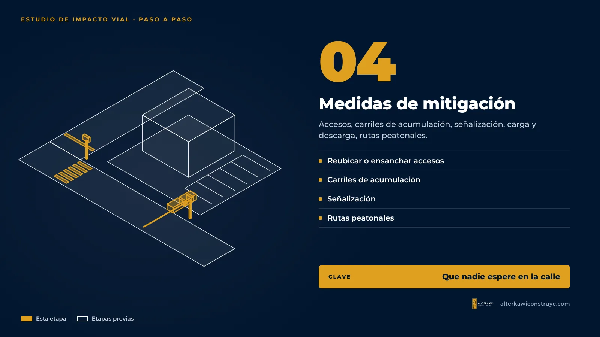
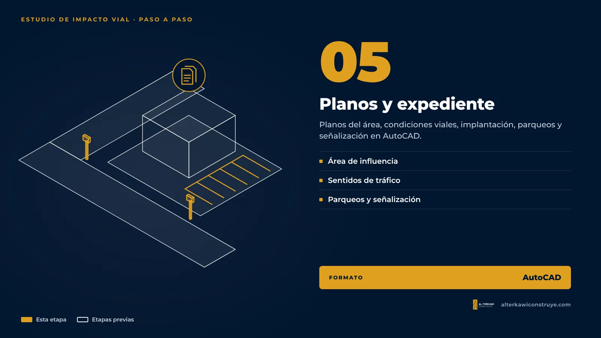
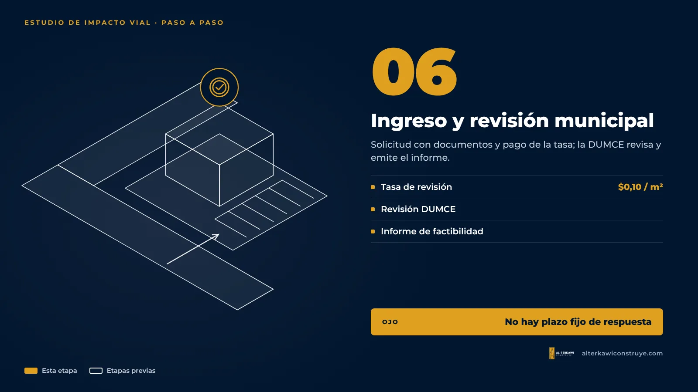
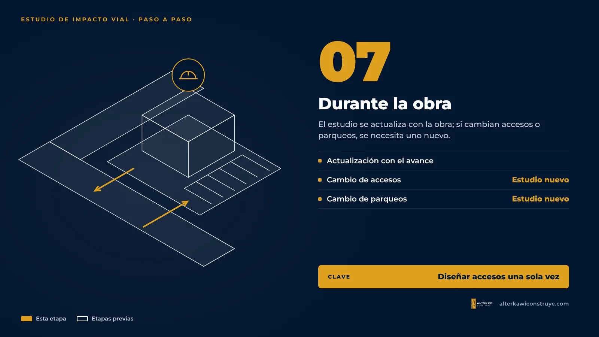

Cómo se hace un estudio de impacto vial en Guayaquil, paso a paso

Un estudio de impacto vial no es un formulario: es un trabajo de campo y de análisis que toma tiempo. Conocer sus etapas ayuda a las empresas a planificar el cronograma de apertura con realismo.
1. Definir el proyecto y el área de influencia

Se parte de la memoria del proyecto: objetivos, uso, áreas de terreno y construcción, y cálculo de parqueaderos. Luego se delimita el área de influencia, que en Guayaquil debe ser de al menos 300 metros alrededor del proyecto. Ahí se identifican las vías, intersecciones, sentidos de circulación y puntos críticos.
2. Levantamiento de campo y conteos de tráfico

Se hacen conteos vehiculares en las vías e intersecciones del área de influencia. La ordenanza plantea conteos de 06h00 a 20h00 durante dos días, con horarios que varían según el tipo de vía y el nivel de impacto. Un detalle importante: los conteos no pueden tener más de tres meses al momento de presentar el estudio. Si el proyecto se retrasa, puede tocar repetirlos.
También se registra el estado de las vías, la señalización existente y se toman fotografías.
3. Análisis

- Generación de viajes: cuántos vehículos atraerá el proyecto, con una proyección a 10 años.
- Niveles de servicio: cómo funcionan hoy las vías y cómo funcionarán con el proyecto.
- Demanda de estacionamiento: si los parqueos previstos alcanzan.
4. Medidas de mitigación

Con los resultados se proponen medidas: reubicar o ensanchar accesos, carriles de acumulación para que los autos no esperen en la calle, señalización horizontal y vertical, zonas de carga y descarga, rutas peatonales. Todo se acompaña de un plan de señalización y tráfico.
5. Planos y expediente

El estudio incluye planos del área de influencia y posibles impactos, condiciones viales, sentidos de tráfico, implantación arquitectónica, distribución de parqueos y señalización en AutoCAD.
6. Ingreso y revisión municipal

- Se ingresa la solicitud con los documentos y el comprobante de pago de la tasa ($0,10 por m² de construcción).
- La ventanilla la envía a la DUMCE, que revisa si cumple.
- Si falta algo, el Municipio pide completar. Si no se responde, se considera desistimiento.
- Si cumple, la DUMCE emite el informe de factibilidad técnica y notifica.
La ordenanza no fija un plazo de respuesta, por eso conviene presentar un expediente completo desde el inicio.
7. Durante la obra

La ordenanza indica que el estudio debe actualizarse conforme avanza la construcción. Y si el proyecto cambia accesos, salidas o parqueos, se necesita un estudio nuevo.
Siga leyendo
- Qué es el estudio de impacto vial y cuándo es obligatorio
- Impacto vial o análisis de accesibilidad
- Guía de permisos para empresas
¿Te ayudamos con tu proyecto?
En AL-TERKAWI CONSTRUYE te acompañamos desde el plano hasta la entrega de la obra.

Coordinamos el estudio como parte del permiso de su local
Un solo responsable para el estudio vial y el resto del expediente.

Arquitecto en Guayaquil, Samborondón y Daule. Permisos municipales y obra para viviendas y empresas.